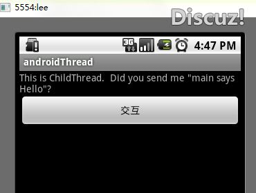

Android 线程间的通信
Andriod提供了Handler和Looper来满足线程间的通信。例如一个子线程从网络上下载了一副图片，当它下载完成后会发送消息给主线程，这个消息是通过绑定在主线程的Handler来传递的。
在Android，这里的线程分为有消息循环的线程和没有消息循环的线程，有消息循环的线程一般都会有一个Looper，这个事android的新概念。我们的主线程（UI线程）就是一个消息循环的线程。针对这种消息循环的机制，我们引入一个新的机制Handle，我们有消息循环，就要往消息循环里面发送相应的消息，自定义消息一般都会有自己对应的处理，消息的发送和清除，消息的的处理，把这些都封装在Handle里面，注意Handle只是针对那些有Looper的线程，不管是UI线程还是子线程，只要你有Looper，我就可以往你的消息队列里面添加东西，并做相应的处理。
但是这里还有一点，就是只要是关于UI相关的东西，就不能放在子线程中，因为子线程是不能操作UI的，只能进行数据、系统等其他非UI的操作。
在Android，这里的线程分为有消息循环的线程和没有消息循环的线程，有消息循环的线程一般都会有一个Looper，这个是android的新概念。我们的主线程（UI线程）就是一个消息循环的线程。针对这种消息循环的机制，我们引入一个新的机制Handler，我们有消息循环，就要往消息循环里面发送相应的消息，自定义消息一般都会有自己对应的处理，消息的发送和清除，把这些都封装在Handler里面，注意Handler只是针对那些有Looper的线程，不管是UI线程还是子线程，只要你有Looper，我就可以往你的消息队列里面添加东西，并做相应的处理。
但是这里还有一点，就是只要是关于UI相关的东西，就不能放在子线程中，因为子线程是不能操作UI的，只能进行数据、系统等其他非UI的操作。
一个Handler的创建它就会被绑定到这个线程的消息队列中，如果是在主线程创建的，那就不需要写代码来创建消息队列了，默认的消息队列会在主线程被创建。但是如果是在子线程的话，就必须在创建Handler之前先初始化线程的消息队列。如下面的代码：
class ChildThread extends Thread { public void run() {
/*
* 创建 handler前先初始化Looper.
*/
Looper.prepare();
/*
* 在子线程创建handler，所以会绑定到子线程的消息队列中
*/
mChildHandler = new Handler() {
public void handleMessage(Message msg) {
/*
* Do some expensive operations there.
*/
}
};
/*
* 启动该线程的消息队列
*/
Looper.loop();
}
}
当Handler收到消息后，就会运行handleMessage(…)的回调函数，可以在里面做一些耗时的操作。
最后完成了操作要结束子线程时，记得调用quit()来结束消息循环队列。
mChildHandler.getLooper().quit();
下面是一个线程间通信的小例子：

public class MainThread extends Activity { private static final String TAG = "MainThread";
private Handler mMainHandler, mChildHandler;
private TextView info;
private Button msgBtn;
@Override
public void onCreate(Bundle savedInstanceState) {
super.onCreate(savedInstanceState);
setContentView(R.layout.main);
info = (TextView) findViewById(R.id.info);
msgBtn = (Button) findViewById(R.id.msgBtn);
mMainHandler = new Handler() {
@Override
public void handleMessage(Message msg) {
Log.i(TAG, "Got an incoming message from the child thread -
+ (String) msg.obj);
// 接收子线程的消息
info.setText((String) msg.obj);
}
};
new ChildThread().start();
msgBtn.setOnClickListener(new OnClickListener() {
@Override
public void onClick(View v) {
if (mChildHandler != null) {
// 发送消息给子线程
Message childMsg = mChildHandler.obtainMessage();
childMsg.obj = mMainHandler.getLooper().getThread()
.getName()
+ " says Hello";
mChildHandler.sendMessage(childMsg);
Log.i(TAG, "Send a message to the child thread -
+ (String) childMsg.obj);
}
}
});
}
public void onDestroy() {
super.onDestroy();
Log.i(TAG, "Stop looping the child thread's message queue");
mChildHandler.getLooper().quit();
}
class ChildThread extends Thread {
private static final String CHILD_TAG = "ChildThread";
public void run() {
this.setName("ChildThread");
// 初始化消息循环队列，需要在Handler创建之前
Looper.prepare();
mChildHandler = new Handler() {
@Override
public void handleMessage(Message msg) {
Log.i(CHILD_TAG,
"Got an incoming message from the main thread -
+ (String) msg.obj);
try {
// 在子线程中可以做一些耗时的工作
sleep(100);
Message toMain = mMainHandler.obtainMessage();
toMain.obj = "This is
+ this.getLooper().getThread().getName()
+ ". Did you send me \"" + (String) msg.obj
+ "\"?";
mMainHandler.sendMessage(toMain);
Log.i(CHILD_TAG, "Send a message to the main thread -
+ (String) toMain.obj);
} catch (InterruptedException e) {
e.printStackTrace();
}
}
};
Log.i(CHILD_TAG, "Child handler is bound to -
+ mChildHandler.getLooper().getThread().getName());
// 启动子线程消息循环队列
Looper.loop();
}
}
}